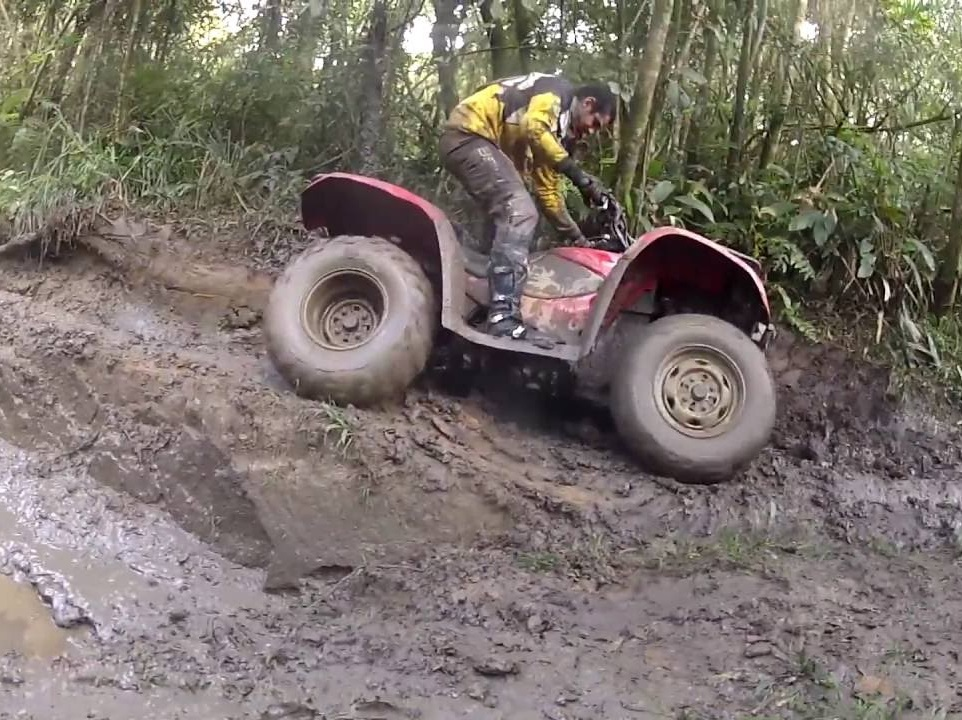

Natureza Pedra Bela
| Tirolesa | ||
| Informações
A compra do ingresso realiza-se no quiosque localizado no portal da cidade, onde se encontram os monitores preparados para equipá-lo e uma van pronta para levá-lo ao sopé da pedra. No alto desta há um monitor que checará e plugará seu equipamento no cabo, liberando sua descida somente após autorização dos responsáveis pelo freio. Com a saída do alto da pedra do santuário e a chegada no portal, cabo AACI ½ sem emenda, único lance e 1900 metros de extensão, você pode atingir uma velocidade de até 107km/hora. Venha conferir e experimentar 1min e 30seg de pura emoção! Sábado, Domingo e feriados: 09h às 17h. Em horário de verão, das 09h às 18h. Obs.: Horário sujeito à mudanças devido à condições climáticas e/ou fila de espera. Valor por pessoa: R$ 50,00 (com transporte e seguro inclusos) Não haverá devolução do dinheiro em caso de desistência por parte do cliente Peso Min: 40kg Peso Máx: 150kg Informações: (11) 99871-9824 ou (11) 997835263 Envie sua foto para nós! info@almadepedra.com.br | ||
| Rapel | ||
| Informações
O rapel na Pedra da Bela Vista é o maior de Socorro. São 98 metros de descida. Por estar no ponto mais alto da cidade, a vista panorâmica da região e a paisagem se tornam atrativos a mais para o rapel. O rapel é uma técnica do alpinismo, usada para descer a montanha após a escalada. A atividade na Pedra Bela Vista é praticada com todas as normas de segurança previstas no Brasil O praticante passa por uma instrução, com nossos instrutores de técnicas verticais, e em seguida faz o treinamento prévio em uma rocha de 15 metros. O retorno da atividade é por trilha. Horários Sábado, Domingo e Feriados: saídas às 10h e às 15h Segunda a Sexta: saídas às 10h e às 15h - Somente para grupos mínimos de 6 participantes | ||
| Rafting | ||
| Informações
turistas descem o rio Corrente, guiados por um instrutor, num percurso repleto de corredeiras e muita emoção. A descida começa na cachoeira do Nazário (local símbolo do Núcleo Coati Munhoz) e desce até a ‘corredeira do pico’. O percurso dura cerca de duas horas e é realizado com total segurança. Esse é o rafting, um esporte que mistura adrenalina com segurança, e que pode ser praticado por qualquer pessoa. Por ser praticado em equipe, proporciona a toda a família ou a um grupo de amigos o prazer de desenvolverem atividades em conjunto. A amizade e o companheirismo são as grandes estratégias do rafing. Existem vários graus de dificuldade, para todos os gostos, por isso qualquer um pode se aventurar de acordo com sua vontade. Mínimo 5 pessoas. | ||
 |
||
| Trilhas | ||
| Informações
Acesse: Trilhas | ||
|  |  |
|